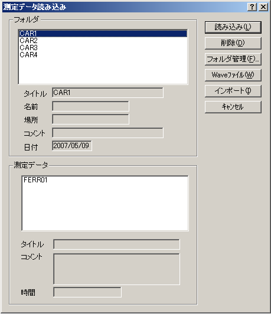

DSSF3 > RA > ACF/CCF測定 > 測定ガイド
測定データの読み込み、データベースのインポート
インパルス応答ウィンドウの[読込]ボタンをクリックすると、データベースに保存してある測定済みのインパルス応答データを読み込むことができます。保存してあるフォルダとそのフォルダ内の データが「測定データ読み込み」ダイアログに表示されますので、読み込むデータを選んで[読み込み]ボタンをクリックしてください。
※リアルタイムアナライザ(RA)をインストールした状態では、「サンプルデータ」のみデータベースに記録されています。

※DSSF3は、8、16、32bitに対応しています。WAVEファイルに記録されたサンプリングレートがそのまま使用されます。
[インポート]ボタンをクリックすると、測定データベースのインポート（読み込み）ができます。 測定データを保存してあるフォルダを選ぶと「FOLDER.DBF」というファイルが表示されます。このファイルを選んで[開く]ボタンをクリックしてください。この操作によって、過去の測定データを 現在使用しているデータベースに追加することができ、測定データの比較が容易に行えます。「FOLDER.DBF」ファイルに関しては、測定データのバックアップを参考にしてください。
DSSF3 > RA > ACF/CCF測定 > 測定ガイド